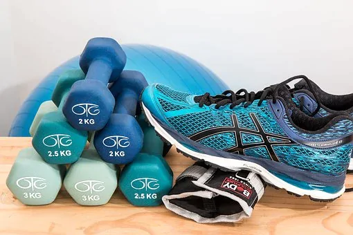

Conheça 8 tendências para 2024
Todos os anos, os especialistas em fitness respondem a diversas pesquisas e preveem os padrões e tendências que guiarão as academias e os...
Saiba maisTragédia no mundo fitness
A Fisiculturista Cíntia Goldani, morreu aos 36 anos, na quarta-feira (26), em Porto Alegre. Conforme informações, a atleta teve complicações...
Saiba mais

Exercícios rápidos e intensos
Três e sete minutos. São estes os períodos de tempo das mais populares aplicações móveis de fitness que prometem corpos tonificados e em...
Saiba mais